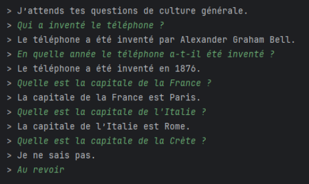

Portfolio Personnel

Conception et développement de mon portfolio personnel en HTML, CSS et JavaScript pur.
Thème bordeaux sombre, animations au scroll, navbar fixe et responsive mobile.

Projets réalisés durant ma première année de BUT Informatique.
Conception et développement de mon portfolio personnel en HTML, CSS et JavaScript pur.
Thème bordeaux sombre, animations au scroll, navbar fixe et responsive mobile.
Création d'un site web destiné à des élèves de 3ᵉ pour présenter l'entreprise Hardis.
Objectif : rendre l'information claire et accessible pour un public jeune.
Travail réalisé : intégration front-end et mise en forme du contenu.

Développement d'un site web à thème militaire après un entretien client en anglais.
Objectif : comprendre le besoin, créer une maquette et livrer un site conforme.
Travail réalisé : intégration, mise en page et respect du cahier des charges.

 MCD/MLD
Modélisation
SQL
MCD/MLD
Modélisation
SQL
Conception d'une base de données pour gérer une association maritime.
Objectif : modéliser, créer et interroger une base relationnelle complète.
Travail réalisé : requêtes SQL, cohérence des données et participation au MCD/MLD.

 Statistiques
Graphiques
Statistiques
Graphiques
Analyse d'une base open data NutriScore pour répondre à une problématique précise.
Objectif : nettoyer, explorer et visualiser les données.
Travail réalisé : graphiques, interprétation et rédaction en anglais.

 POO
Algorithmes
POO
Algorithmes
Développement d'un chatbot capable de sélectionner une réponse adaptée à la question.
Objectif : analyser la question et choisir une réponse cohérente.
Travail réalisé : logique algorithmique et programmation orientée objet.

Je suis à la recherche d'un stage pour ma deuxième année de BUT Informatique. N'hésitez pas à me contacter !
Me contacter